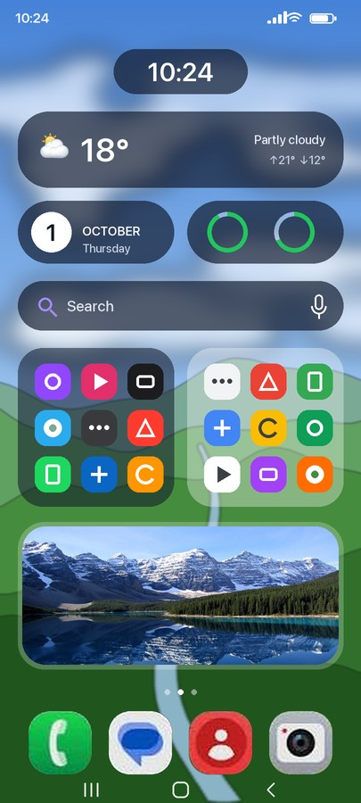

A kosher phone.
One tap away.
טלפון כשר בלחיצה אחת · סינון לכל הטלפון
Tap כשר and the phone becomes a kosher phone: only the apps you choose, no open internet, its own calm home screen. Leaving takes a code, and someone you trust keeps it.


Your Android,
as it is.
Every app, the whole internet, all the settings. Scroll to switch.
A kosher
Android.
Its own kosher home, internet only for the apps you allow.
Chrome · Play Store · Settings · Everything
Phone · WhatsApp · Siddur · Luach
Kosher Switch for Android
Version 1.4 · Android 10 or newer · Samsung, Pixel, Xiaomi, keypad phones and tablets.
New in 1.4: a complete Siddur in all three nusachot (Pesukei D’Zimra, Lecha Dodi, Shabbat Mussaf, the Torah readings and more), and easier reading: instructions in small gold print, clear titles for every part.
- Download on the phone and open the file. If asked, allow installing from your browser.
- Open Kosher Switch: its guide walks you through the one-time setup.
- Or set up a reset phone with the QR code below, with nothing to install by hand.
Safe, even where
the internet is allowed.
Every app you allow online goes through a kosher filter, and the assistant stays clean whatever it's asked.
Our advice: no browser at all. A kosher phone is safest with no browser, not even a filtered or “kosher” one, so Kosher Switch has none by default and marks browsers “not recommended”. If you still allow one, everything below keeps it as safe as we can. The choice is yours.
A filter for every allowed app
- Adult sites blocked
- Immodest and mixed-content sites blocked
- SafeSearch always on: Google, Bing, YouTube
- Proxies and VPNs that get around filters blocked
- Chrome: no incognito, strictest YouTube
- No pictures on websites, unless a parent allows them
- The Google app and other browsers stay offline while pictures are off
An assistant with guard rails
- Questions are checked before the AI sees them
- Answers are checked while they're written
- Hebrew and English, even with spelling tricks
- Refuses through stories, role-play or “for education”
- Recipes still get their kashrut check
The Kosher Browser Off by default
- Only if you really need a browser: it stays off unless you turn it on
- Every picture is checked on the phone before it shows
- Any picture with a person in it stays covered with the Kosher Switch seal
- Nature, food, maps and diagrams still show
- SafeSearch always on, and videos don't play
- Nothing is sent anywhere to be checked


Everything a
kosher phone needs.
Kosher mode isn't a filter you can click past. The phone itself changes, and it stays that way until the code is entered.
Only your apps
Everything else disappears: browsers, stores, social media. Settings are locked, installing is blocked, safe mode is off.
Internet only where allowed
Every app is cut off from Wi-Fi and data, except the ones you pick, like Waze. Notifications from blocked apps are hidden too.
Its own home screen
A big clock, the Hebrew date, a glass widget with the parsha and zmanim, a dock, and a swipe-up drawer you arrange yourself.
Back in one code
Leaving takes your secret code. A restart doesn't turn it off, and five wrong codes lock the keypad for a minute.
Siddur & Tehillim
Ashkenaz, Sefard and Edot HaMizrach. Every prayer as one text, a parts menu, search, and daily Tehillim. Fully offline.
Luach & zmanim
Hebrew calendar, parsha, holidays, candle lighting and the day's zmanim, calculated for where you are.
Notes that do more
Bold, headings, lists, tap-to-tick checklists and drawings in seven colors. Pin and search your notes.
Offline assistant
“Wake me up at 7”, “call Mom”, “write a note with a recipe”. It runs on the phone itself; nothing is sent anywhere.
Live weather
Now, hourly and 10 days over a living sky: sun glare, rain, snow, lightning. A parent can turn it off.
Keypad phones
On phones like the Qin F21 Pro the number keys type the code, Back erases, OK opens, and the arrows move a gold ring around every screen.
Made to feel good
Liquid-glass design, haptics, dark and light mode, five backgrounds, three icon styles.
Smooth everywhere
Many small phones switch animations off. Kosher Switch keeps its own screens gliding anyway, without touching the phone's settings.
See it on a real phone.
Every screen is from a Samsung Galaxy A32 5G running Kosher Switch.


One tap in.
Tap כשר in the swipe-down panel. The emblem spins in, the phone reshapes itself, and the kosher home screen builds in piece by piece.
One code out.
A glass keypad with haptics. Without the code it stays kosher, even after a restart.
Calm, clear, and yours.
Swipe up for your apps on frosted glass. Hold any app to move it. Choose Kosher, Glass or Original icons.
The whole siddur, in your pocket.
The right prayer for the time of day is waiting at the top. Ashkenaz, Sefard and Edot HaMizrach, with search that ignores nikud.
Every prayer, one text.
Each tefillah opens as one continuous text, with a menu to jump to any part. Daily and weekly Tehillim too.
Help that never goes online.
A small AI runs right on the phone. It makes calls, sets alarms and writes notes. Food answers get an automatic kashrut check.
Samsung, Pixel, Xiaomi,
and more.
A regular Android app that adapts to big screens and small ones, including keypad phones like the Qin F21 Pro.
- 📞 Phone
- 💬 Messages
- 📖 Siddur
- 🗓 Luach
Pixel and keypad-phone pictures are illustrations. Fully tested so far on the Samsung Galaxy A32 5G; more phones are being tested. Needs Android 10 or newer with a 64-bit processor.
Take a closer look.


Set it up.
Hand it over.
Choose a code only you know, pick the apps your child may use and which of them may go online, then turn it on. Without the code it stays kosher, even after a restart.
- No browser and no assistant by default: you decide what to add
- The phone's Settings app stays locked
- No accounts, app stores or browsers unless you allow them
- Setting it up for yourself? Let someone you trust choose the code
Three steps.
Set up once; after that it is one tap.
Set it up once
With the QR code on a freshly reset phone, or one command from a computer. Android requires this for any app that locks a phone.
Choose code & apps
The app's built-in guide walks you through it. Everything is included: siddur, calendar, notes, assistant.
Tap כשר
Swipe down from the top and tap the כשר button. To leave, tap it again and enter the code.
Two ways to set it up.
Kosher Switch has to be the phone's "device owner". Android allows that only through one of these.
A. With this QR code
- Back up the phone, then factory reset it (or start with a new phone).
- On the very first Welcome screen, tap the screen 6 times.
- Connect to Wi-Fi if asked, then scan this code:
The phone downloads and sets up Kosher Switch by itself. Needs a phone with Google's setup screen.
B. With a computer
- Install the app with the Download button.
- Settings → About phone → Software information → tap Build number 7 times.
- Developer options → turn on USB debugging.
- Settings → Accounts → remove all accounts for a moment.
- Connect to a computer with Android platform tools and run:
adb shell dpm set-device-owner dev.kosherswitch/.KosherAdmin - Add your accounts back.

Ready when you are.
Set it up once, let someone you trust choose the code, and the phone is kosher with a single tap.